Mordor original graphics Extracted locally from MG11.DLL, MORDOR.EXE and supplied forms. BMP files retain original bytes; PNGs retain decoded RGB pixels. This is a research export, not remastered art.
Export guide · Asset manifest · Monster mappings
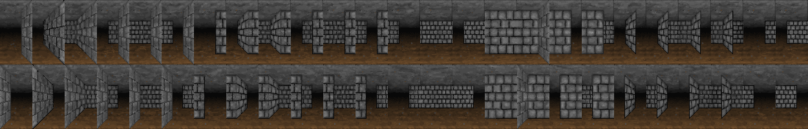
MG11_MAZE_000000 · 1250×200 Original BMP ORIGINAL_DATA/MG11.DLL @ 0xc00 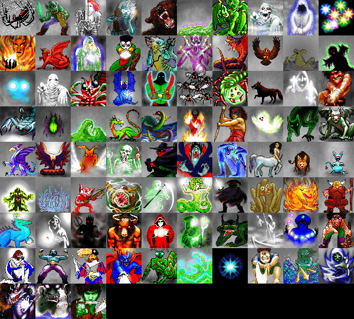
MG11_MONS_000000 · 600×540 Original BMP ORIGINAL_DATA/MG11.DLL @ 0x3e260 MG11_MISC_000000 · 270×45 Original BMP ORIGINAL_DATA/MG11.DLL @ 0x8d6a0 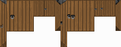
MG11_DOOR_000000 · 200×79 Original BMP ORIGINAL_DATA/MG11.DLL @ 0x90ab0 MG11_WATR_000000 · 50×20 Original BMP ORIGINAL_DATA/MG11.DLL @ 0x94ca0 MG11_QSND_000000 · 50×18 Original BMP ORIGINAL_DATA/MG11.DLL @ 0x954f0 MG11_FOG_000000 · 50×50 Original BMP ORIGINAL_DATA/MG11.DLL @ 0x95cd0 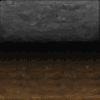
MG11_BLNK_000000 · 100×100 Original BMP ORIGINAL_DATA/MG11.DLL @ 0x96b30 MG11_PICS_000000 · 405×15 Original BMP ORIGINAL_DATA/MG11.DLL @ 0x99680 MG11_ASMO_000000 · 100×100 Original BMP ORIGINAL_DATA/MG11.DLL @ 0x9b2a0 MORDOR_4_000292 · 7×5 Original BMP Mordor/MORDOR.EXE @ 0xa0b92, Mordor/MORDOR.EXE @ 0xa0d3e, Mordor/MORDOR.EXE @ 0xa0eea, Mordor/MORDOR.EXE @ 0xa1096, Mordor/MORDOR.EXE @ 0xa1242, Mordor/MORDOR.EXE @ 0xa13ee, POOP/CHARCREA.FRM @ 0x241, POOP/CHARCREA.FRM @ 0x3d0, POOP/CHARCREA.FRM @ 0x55f, POOP/CHARCREA.FRM @ 0x6ee, POOP/CHARCREA.FRM @ 0x87d, POOP/CHARCREA.FRM @ 0xa0c MORDOR_4_000368 · 7×5 Original BMP Mordor/MORDOR.EXE @ 0xa0c68, Mordor/MORDOR.EXE @ 0xa0e14, Mordor/MORDOR.EXE @ 0xa0fc0, Mordor/MORDOR.EXE @ 0xa116c, Mordor/MORDOR.EXE @ 0xa1318, Mordor/MORDOR.EXE @ 0xa14c4, POOP/CHARCREA.FRM @ 0x30b, POOP/CHARCREA.FRM @ 0x49a, POOP/CHARCREA.FRM @ 0x629, POOP/CHARCREA.FRM @ 0x7b8, POOP/CHARCREA.FRM @ 0x947, POOP/CHARCREA.FRM @ 0xad6 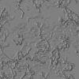
MORDOR_6_0008a6 · 100×100 Original BMP Mordor/MORDOR.EXE @ 0xa25a6, POOP/FRMMAIN.FRM @ 0x88b MORDOR_6_0038e1 · 20×20 Original BMP Mordor/MORDOR.EXE @ 0xa55e1, POOP/FRMMAIN.FRM @ 0x38d1 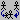
MORDOR_6_003a96 · 20×20 Original BMP Mordor/MORDOR.EXE @ 0xa5796, POOP/FRMMAIN.FRM @ 0x3a76 MORDOR_6_003c48 · 20×20 Original BMP Mordor/MORDOR.EXE @ 0xa5948, POOP/FRMMAIN.FRM @ 0x3c18 MORDOR_6_003e8f · 20×20 Original BMP Mordor/MORDOR.EXE @ 0xa5b8f, POOP/FRMMAIN.FRM @ 0x3e0b MORDOR_6_004041 · 20×20 Original BMP Mordor/MORDOR.EXE @ 0xa5d41, POOP/FRMMAIN.FRM @ 0x3fad MORDOR_6_0041f3 · 20×20 Original BMP Mordor/MORDOR.EXE @ 0xa5ef3, POOP/FRMMAIN.FRM @ 0x414f 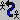
MORDOR_6_0043a5 · 20×20 Original BMP Mordor/MORDOR.EXE @ 0xa60a5, POOP/FRMMAIN.FRM @ 0x42f1 MORDOR_6_004557 · 20×20 Original BMP Mordor/MORDOR.EXE @ 0xa6257, POOP/FRMMAIN.FRM @ 0x4493 MORDOR_6_004709 · 20×20 Original BMP Mordor/MORDOR.EXE @ 0xa6409, POOP/FRMMAIN.FRM @ 0x4635 MORDOR_14_0003a6 · 120×42 Original BMP Mordor/MORDOR.EXE @ 0xaafa6, POOP/FRMCTYM.FRM @ 0x38c 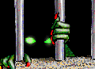
MORDOR_14_001b9c · 120×87 Original BMP Mordor/MORDOR.EXE @ 0xac79c, POOP/FRMCTYM.FRM @ 0x1b7d 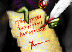
MORDOR_14_0048aa · 120×87 Original BMP Mordor/MORDOR.EXE @ 0xaf4aa, POOP/FRMCTYM.FRM @ 0x4886 MORDOR_14_007689 · 120×87 Original BMP Mordor/MORDOR.EXE @ 0xb2289, POOP/FRMCTYM.FRM @ 0x7639 MORDOR_14_00a397 · 120×87 Original BMP Mordor/MORDOR.EXE @ 0xb4f97, POOP/FRMCTYM.FRM @ 0xa342 MORDOR_14_00d0a5 · 120×87 Original BMP Mordor/MORDOR.EXE @ 0xb7ca5, POOP/FRMCTYM.FRM @ 0xd04b MORDOR_14_00fdb3 · 120×87 Original BMP Mordor/MORDOR.EXE @ 0xba9b3, POOP/FRMCTYM.FRM @ 0xfd54 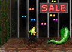
MORDOR_14_012c27 · 120×87 Original BMP Mordor/MORDOR.EXE @ 0xbd827, POOP/FRMCTYM.FRM @ 0x12b82 MORDOR_24_0000b2 · 15×14 Original BMP Mordor/MORDOR.EXE @ 0xc41b2, POOP/FRMWELCO.FRM @ 0xa0 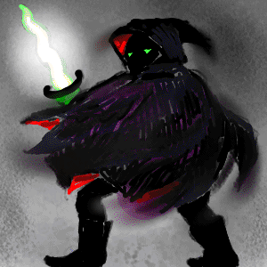
MORDOR_24_00070d · 300×300 Original BMP Mordor/MORDOR.EXE @ 0xc480d, POOP/FRMWELCO.FRM @ 0x707 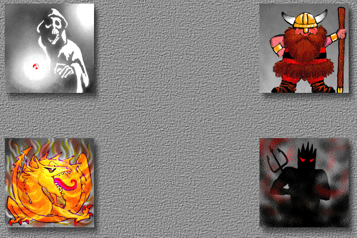
MORDOR_36_0005c7 · 600×400 Original BMP Mordor/MORDOR.EXE @ 0xdd4c7, POOP/FRMMENU.FRM @ 0x523 MORDOR_54_00012b · 150×150 Original BMP Mordor/MORDOR.EXE @ 0x11cc2b, POOP/FRMCREDI.FRM @ 0x123